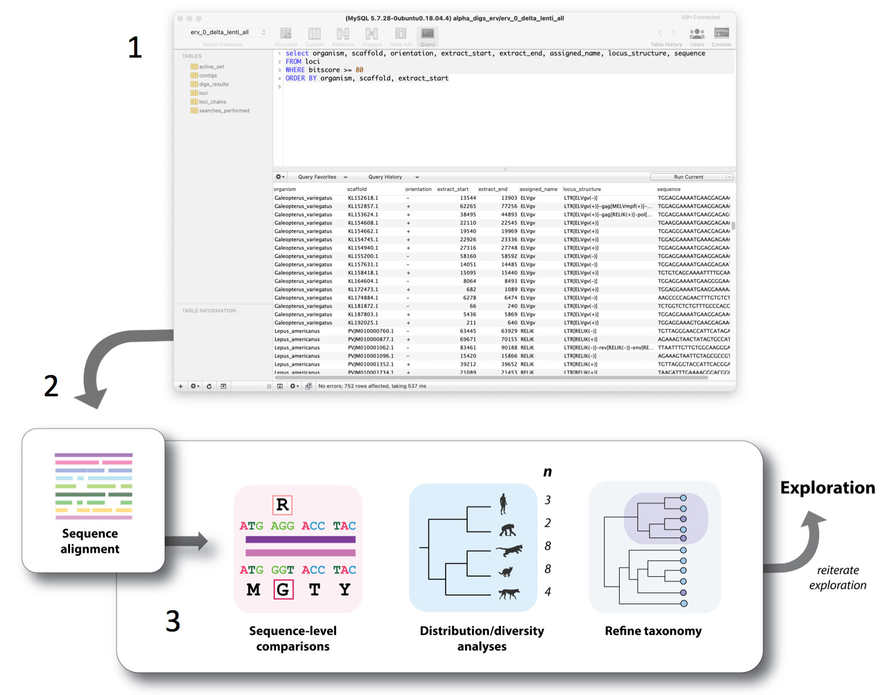

Structure of a DIGS-based investigation
Comparative studies using database-integrated genome screening (DIGS) entail separate 'exploration' and 'analysis' phases, with each of these phases being split into two component parts as follows:
- Exploration: (1) Setting up and (2) running a similarity search-based screen.
- Analysis: (3) Inspecting screening output via a relational database, and (4) performing comparative analysis of exported sequence data.
As shown above, this process is usually iterative - at least to some degree - since analysis of screening results often reveals new information that can be used to design more informative or comprehensive screens.
Part 1. Exploration: Setting up and running an in silico screen
DIGS is a project-based framework in which investigations are centred around a genome feature of interest. Any genome feature can be investigated in principle, so long as it contains sufficient sequence conservation to be reliably detected in a similarity search.
The 'reference sequence library' is a curated set of sequences relevant to the genome feature under investigation). Usually this will consist of:
- A set of conserved DNA or polypeptide sequences derived from the genome feature of interest.
However, depending on the kind of investigation being performed, it may also contain :
- Sequences that do not derive from the genome feature under investigation, but can provide useful information about the locus in which it occurs.
- Sequences representing genome features that are not relevant to the investigation, but are sufficiently similar to them to generate 'false positive' matches.
Sequences that match to the query ('hits') can then be extracted and classified. A convenient way of rapidly classifying or 'genotyping' hits is via BLAST-based comparison to the reference library, as indicated in the illustration below.

Schematic representation of the exploration phase of a DIGS-based investigation.
Here, the genome features being investigated are a set of related genes In step (1) a sequence from the reference library is selected and used as a 'probe' or 'query' in a BLAST-based search of a chosen target database. In step (2), sequences identified in this search are extracted and classified via BLAST-based comparison to the reference library. These searches provides a way to effectively 'delve in' to genomic databanks and recover related sequences and as such, they provide a means to survey unmapped regions of the genomic 'landscape'.
Part 2. Analysis: Inspecting results and exporting data
In DIGS, a similarity search-based screening pipeline is linked to a relational database management system (RDBMS), and the outputs of screening are captured in a project-specific relational database.
This approach not only provides a convenient and robust basis for implementing systematic, automated screens that proceed in an efficient, non-redundant way, it also allows screening data to be interrogated using structured query language (SQL) - a well-established, powerful approach for querying relational databases.
- Investigation of output via the relational database.
- Comparative genomic analysis of exported sequence data

Analysing screening output: A schematic representation of the three component parts of the 'analysis' phase of DIGS-based screen. (some comparative analysis do not require an alignment, but most do)